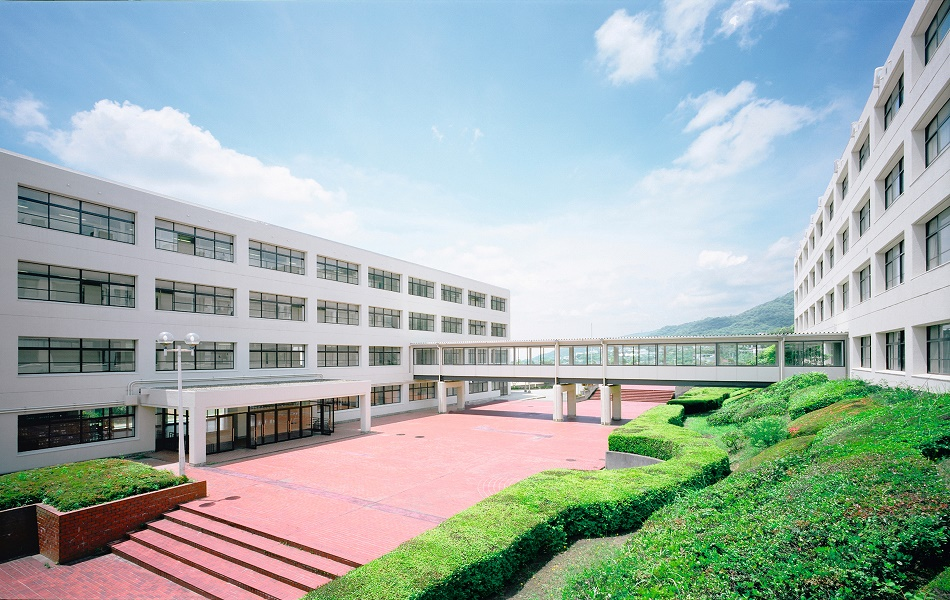
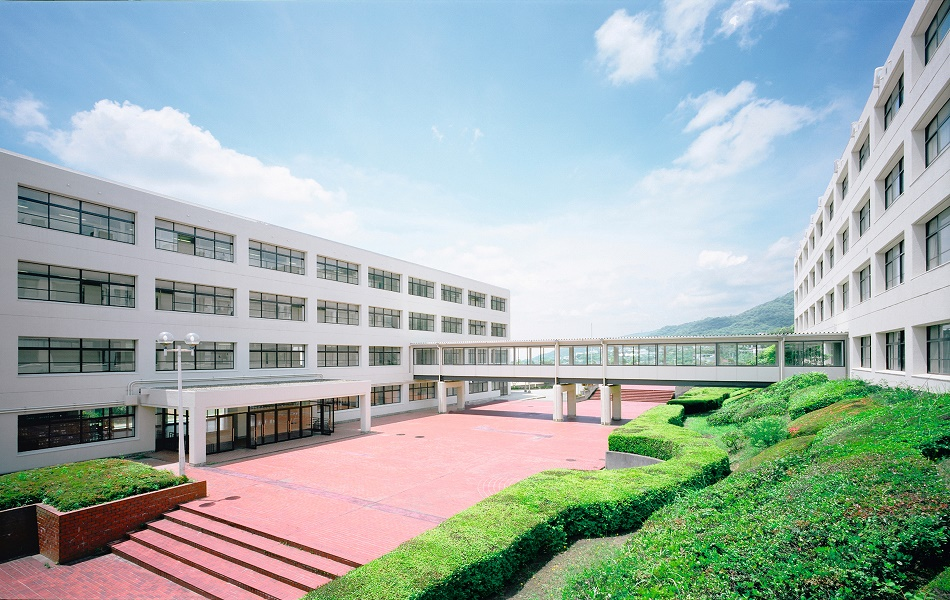

お知らせ
2021年度 一般公開行事(予定)
コロナ禍のため，変更を余儀なくされる場合がございます。詳細につきましては近づきましたら，ＨＰにアップしますのでご確認ください。
| 体育祭 （高等学校） |
今年度非公開 | |
|---|---|---|
| 体育祭 （中学校） |
延期・期日未定 | |
| 音楽と展覧の会 （高等学校） |
９月23日(祝) | 2020年度はオンライン開催 |
| 音楽と展覧の会 （中学校） |
11月３日(祝) | 2020年度は非公開 |
更新履歴
- (2021.07.18更新)2021年入試相談会予定
- (2020.07.12更新)中学校舎見学会実施について
- (2021.07.09更新)期末考査について(高校)
- (2021.07.09更新)期末考査について(中学)
- (2021.06.28更新)体育祭(高校)
- (2021.05.25更新)６月学校行事について(中学)
- (2021.05.07更新)クラブ登録(中学)
- (2021.04.28更新)学校評価
- (2021.04.26更新)緊急事態宣言を受けて(高校)
- (2021.04.26更新)緊急事態宣言を受けて(中学)
- (2021.04.26更新)2021年度一般公開行事日程
- (2021.04.17公開)2021年度進学情報
- (2021.04.07公開)校舎見学会・入試説明会日程
- (2021.01.18公開)入学考査成績
- (2021.01.09更新)中学入試 願書受付終了
- (2021.01.05更新)中学入試 志願者状況
- (2020.12.28公開)中学入試 志願者状況
- (2020.12.07終了)音楽と展覧の会(高校)
- (2020.11.07終了)2021年度入試説明会
- (2020.11.06更新)音楽と展覧の会(中学)
- (2020.10.01更新)体育祭(中学)
- (2020.10.01終了)教員募集
- (2020.09.23更新)甲関戦結果